Starting from a Behavior Cloning (BC) policy trained on expert trajectories, PPO improves the policy entirely inside LeWM, with no additional real-environment interaction.
Abstract
Training agents through real-world interaction is notoriously costly and challenging. World models offer a promising alternative by learning environment dynamics, enabling agents to plan and improve policies using simulated experience. JEPAs (Joint-Embedding Predictive Architectures) predict future representations rather than pixels; LeJEPA enables stable, collapse-free representation learning through SIGReg, and LeWorldModel (LeWM) extends this idea to temporal prediction directly from visual observations. While LeWM has primarily been explored as a model for planning, we investigate whether it can instead serve as the environment for reinforcement-learning policy improvement with no additional real-environment interaction. Specifically, we ask whether LeWM can provide sufficiently accurate states, transitions, and reward signals for policy optimization to take place entirely within its learned dynamics.
We train a Behavior Cloning (BC) policy on expert demonstrations from Diffusion Policy, along with reward classifiers and an inverse projector for policy learning inside LeWM. Fine-tuning the policy with PPO entirely through imagined LeWM rollouts raises real-environment success from 56.0% to 77.6%, a 38.6% relative improvement without additional real-environment interaction. Yet continued optimization eventually saturates: rollout error grows under distribution shift while reward predictions become increasingly optimistic, producing an imagination–reality gap in which improvements seen by PPO no longer reliably translate back to the real environment.
77.6%
Dream PPO success, real task
0
Additional environment transitions consumed
+27.5 pp
Optimism gap, imagined vs real
52.9%
Rewarded successes that never happened
Problem Definition
Can a policy become better at a real visual-control task when every transition used for its
improvement is generated by a frozen world model?
We begin with three offline ingredients: expert demonstrations, a frozen LeWorldModel trained
on those demonstrations, and a behavioural-cloning policy that can already perform the task.
Our objective is to produce a policy with higher success in the real environment while using
no additional real-environment transitions for PPO training or checkpoint selection.
During improvement, the learner may act only inside LeWM; the simulator is used afterwards
to measure whether the improvement transfers.
This asks more of a world model than one-step prediction or planning from a fixed policy. To
serve as an RL environment, LeWM must close the entire interaction loop: predict the next
state under the policy's actions, return that state in the representation the policy expects,
provide reward, and decide when an episode has succeeded or ended. Small errors can compound
over a rollout, and PPO can actively discover actions that exploit those errors. The central
problem is therefore whether imagined experience remains useful as the improving policy moves
away from the expert behaviour on which the model was trained.
If that loop can be made reliable, a world model becomes more than a planner: it becomes a
reusable offline training environment. Logged experience could support repeated policy
updates before deployment, reducing the cost and risk of trial-and-error on robots or other
physical systems. This project is a proof of concept for that direction and, equally
importantly, a way to expose the reward errors, rollout drift, and model exploitation that
must be controlled before zero-interaction improvement can be trusted outside a benchmark.
Task definition vs. stock swm/PushT-v1
Although we use swm/PushT-v1 as the underlying simulator, our reported task is
deliberately adapted to match the fixed-target PushT demonstrations. In the stock
environment, the green T at position (256, 256) and angle 45° is scene decoration rather
than the actual goal. The true target is a seven-dimensional goal_state—a
future expert state in the standard LeWM evaluation—and native success constrains the
pusher position as well as the block position and angle. We instead rigidly align every
sampled task to the visible green T and define success only by the block reaching within
20 px and 20° of that pose. The reported protocol also starts the block within a 200 px
radius of the target, renders policy observations directly at 224×224, allows up to 300
environment steps, and executes five-action chunks open-loop. The results therefore
describe this fixed-target, block-centric wrapper—not unmodified
swm/PushT-v1 or its standard future-state goal task.
Method
FILL One sentence framing the three stages — everything
downstream of the encoder is frozen-encoder work.
Step 1
Latent BC prior
We first train an action-chunked Behavioral Cloning (BC) policy on expert demonstrations while keeping the LeWM encoder frozen. Rather than acting from a single observation, the policy conditions on a stack of temporally spaced frames, with frame stride controlling the temporal spacing between observations, and predicts a chunk of future actions at each decision step. This gives the policy short-term temporal context while reducing the effective decision frequency. We compare two representations for these stacked observations: LeWM dynamics latents, which are directly predicted by the world model, and the encoder's raw CLS features, taken before projection into LeWM's dynamics space.
Raw CLS features produce the stronger visual BC policy: 56.0 ± 7.7% success compared with 43.6 ± 6.2% for direct LeWM latents. We therefore use the Raw-CLS BC checkpoint as the common prior for all PPO experiments.
This choice creates a small mismatch during imagined training: LeWM rolls the environment forward in its dynamics latent space, while the policy expects raw CLS features. We bridge the two with a learned inverse projector, trained offline to map predicted LeWM dynamics latents back into the policy’s CLS representation. This lets Dream-PPO exploit LeWM’s learned dynamics without forcing the policy itself to operate on the weaker dynamics-latent representation.
The BC policy is not discarded when PPO begins. Its action-chunk network initializes the PPO actor, with a learned state-independent log-standard-deviation turning its deterministic action predictions into a Gaussian policy; a new value head is added on top of the same stacked representations. The encoder remains frozen throughout. Every Env-PPO and Dream-PPO run starts from the same BC checkpoint, so comparisons differ only in the source of training experience—real environment versus LeWM imagination—and the reward formulation, rather than in the quality of the initial policy.
Step 2
Probes & bridge
Both reward models are trained offline on frozen LeWM latents, so Dream-PPO can score
imagined states without querying the simulator. The sparse reward is a binary
objective_met probe: it predicts whether the current latent already satisfies
the PushT success condition, and in the dream loop this prediction supplies both the
sparse reward and the episode termination signal. Since a false positive ends an imagined
episode as a fake success, we tune its decision threshold on validation data for a target
false-positive rate, and optionally mine high-scoring negatives for a second training pass.
The dense reward is a multi-head sigmoid classifier over the same latent space. Each head
predicts whether success will occur within a future horizon, for example 2, 5, 10 or 16
world-model steps. PPO uses these probabilities as a continuous shaping signal, rather than
thresholding them into a second terminal reward. To make both reward probes match the
states they will see during Dream-PPO, training can mix encoded ground-truth latents with
LeWM imagined rollouts generated from expert initial states and ground-truth action chunks.
The bridge is the learned inverse projector used by the policy. It maps LeWM's projected
dynamics latent back to the raw ViT CLS representation:
\[
g:\mathbb{R}^{192}_{\text{projected}}\rightarrow\mathbb{R}^{192}_{\text{CLS}}
\]
It uses two objectives:
\[
\mathcal{L} =
\underbrace{\lVert g(P(c))-c\rVert_2^2}_{\text{supervised inversion}}
+
\lambda\underbrace{\lVert P(g(z))-z\rVert_2^2}_{\text{cycle consistency}}
\]
For why we train one at all, see Performance by latent type below.
Step 3
Dream loop
In the real loop, PPO trains on the simulator. One PPO step is one open-loop action chunk
of 5 environment steps: the agent reads a stack of 3 encoded frames, outputs the chunk,
and the environment itself returns the reward, the success flag and the end of the
episode. Nothing has to be predicted here, so this arm needs no reward probes and no
bridge. We still need the expert dataset for two reasons: the policy PPO starts from is
the BC prior trained on it, and the dataset also fixes the conventions PPO has to follow,
since the action normalisation and the observation contract (frame stack 3, stride 5,
chunk size 5) are read from the BC stats file. PPO therefore keeps working in exactly the
space BC was trained in.
The dream loop replaces the simulator with LeWM, and env.step is never
called. An episode starts from a short window of real frames taken from held-out expert
episodes, and everything after that is imagined: the agent picks an action chunk, and
LeWM's predictor turns the current latent plus that chunk into the next latent. One
predictor step covers 5 environment steps, so it matches one action chunk exactly. The
inverse projector then maps the predicted latent back into the raw CLS space the policy
reads, so the next observation looks like the ones the agent was trained on, and the
probes read the imagined latent to do the simulator's old job: the sparse probe declares
success and ends the episode, the dense one adds shaping on top. Episodes that never
succeed are cut off after a fixed number of predictor steps, just like a time limit in
the real loop.
Results
Each best.pt checkpoint from training seeds 1–3 is evaluated on the same
150 real-environment episodes sampled from master seed 42; success means placing the block
within 20 px and 20° of the fixed target within 300 environment steps, and results are
reported as the mean ± standard deviation across seeds.
BC policy performance
The same action-chunked BC policy, trained on four different inputs and evaluated in the real
environment. This is what decided which representation the rest of the project is built on.
BC policy success rate by policy input
Policy input
Success (%)
State vector
60.7 ± 4.2
CNN
44.2 ± 17.1
CLS features
56.0 ± 7.7
LeWM dynamics latent
43.6 ± 6.2
Mean and standard deviation over 3 seeds. The state vector is privileged information that
does not come from pixels, so it is a reference point rather than a competing method.
CLS features are the strongest visual input, and they are what every PPO run below starts
from. See Performance by latent type for what this cost.
Policy performance after PPO
Policy performance after PPO fine-tuning
Method
Reward
Success rate (%)
Real env. steps
Rel. improvement (%)
Env-PPO
Dense
73.8 ± 5.7
1M
31.8
Env-PPO
Sparse
74.4 ± 8.3
1M
32.9
Dream-PPO
Dense
77.6 ± 1.9
0
38.6
Dream-PPO
Sparse
72.9 ± 2.6
0
30.2
Mean ± std. over 3 seeds; initialized from the CLS BC policy.
The reward labels are not symmetric across methods. Env-PPO receives rewards from the
simulator, while Dream-PPO receives probe-predicted success and learned dense shaping from
imagined latents. The dense rows therefore compare two shaping schemes, not an identical
reward function in two environments.
The budget curves ask how much real interaction Env-PPO needs to match a Dream-PPO policy
trained entirely in LeWM. The bold orange curve is the mean over three Env-PPO seeds and the
thin curves show the individual seeds. Dream-PPO is the blue zero-interaction reference; its
band shows the reported uncertainty. The horizontal axis counts both training interaction
and the real-environment evaluations used for checkpoint selection.
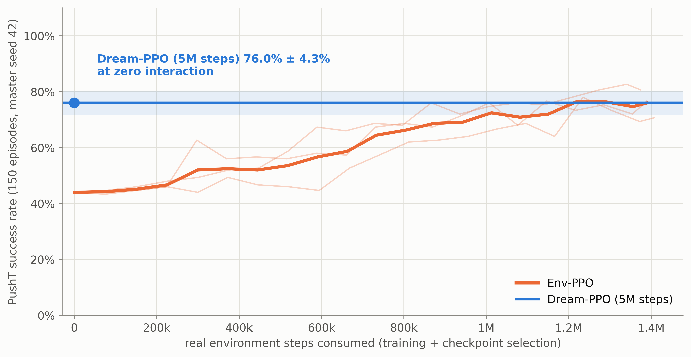
Sparse reward. Dream-PPO reaches 76.0% ± 4.3% after 5M imagined steps while
consuming no real-environment steps. Env-PPO improves steadily from about 44% and first
matches that mean at approximately 1.22M real steps. In this setting, imagination provides
roughly the performance of a mature interactive policy without paying its interaction
cost.
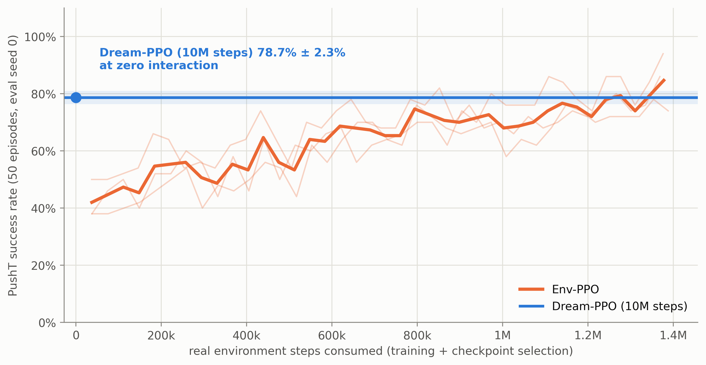
Dense reward. Dream-PPO reaches 78.7% ± 2.3% after 10M imagined steps at zero
interaction. Env-PPO is noisier across seeds, but its mean climbs from about 42% and first
exceeds the dream reference at approximately 1.28M real steps. Dense shaping therefore
changes the learning trajectory, but not the central result: matching the world-model
policy requires well over a million real-environment steps.
The sparse curve uses 150-episode evaluations from master seed 42, whereas the dense curve
uses 50-episode evaluations at seed 0. Interpret the crossing within each panel; the two
absolute success levels are not a controlled sparse-versus-dense comparison.
The world model is optimistic about its own reward
Both curves below come from the same weights at the same moment of training. The imagined one
is what PPO is really maximising: deterministic rollouts inside LeWM from held-out expert
start states, scored by the frozen success probe. The real one is that same checkpoint
evaluated in the simulator. It is recorded for diagnosis only, and with dream selection it
never decides which checkpoint is kept. In both reward modes the imagined curve sits above
the real one at every point of training, and the gap never closes.
The practical consequence is that the imagined number is not a success rate. It is an upper
bound, and it is not a constant offset that you could simply subtract: the gap is widest at
the start, when the policy is still close to the BC prior, and it moves around by tens of
points during training. The two reward modes also fail differently. Under sparse reward the
gap settles at roughly 15 points and stays there, so imagined progress and real progress at
least move in the same direction. Under dense reward the gap narrows until about 2.5M
imagined steps and then widens again to over 20 points, because imagined success keeps
climbing towards 95% while real success stops near 70%. The shaped reward gives PPO more room
to find behaviour that the probe likes and the simulator does not.
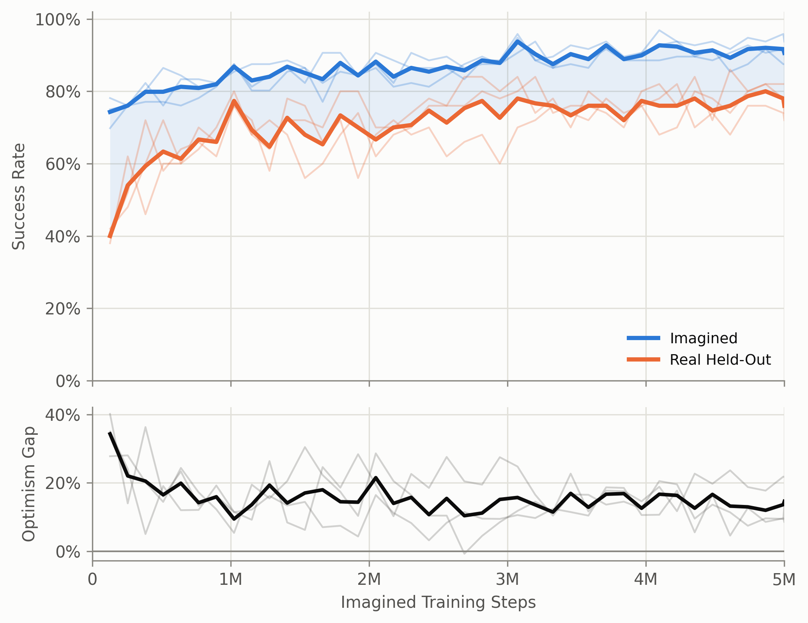
Sparse reward. Imagined success against real held-out success for the same
weights, over 5M imagined training steps (bold line is the mean over 3 seeds, thin lines
are individual seeds). The lower panel is the difference between the two. The gap falls
from about 35 points to roughly 15 within the first million steps and then stays flat.
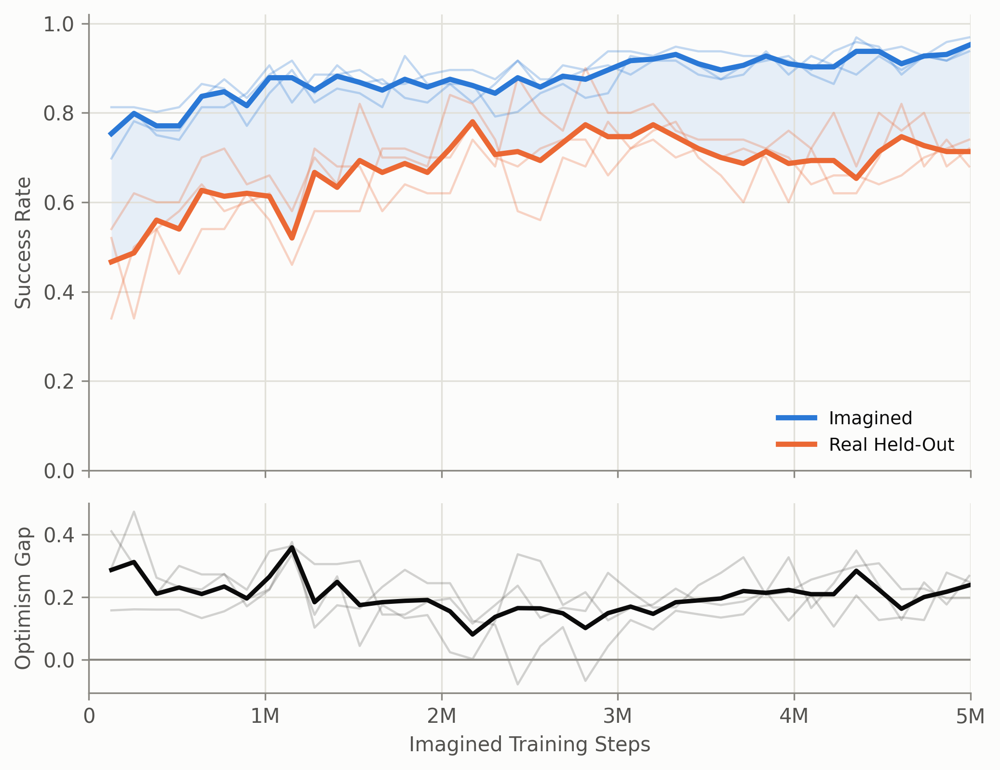
Dense reward. The same measurement for the dream arm trained with the
time-to-success classifier. Here the gap does not settle: after about 2.5M steps it grows
again, because the imagined curve keeps rising while the real one flattens.
Improvement stops well before the imagined budget runs out
Real held-out success rises quickly and then stops. Almost all of the improvement happens in
the first 3M imagined steps, where both arms move from about 50%, the level of the BC prior,
into the middle 70s. After that the curves are flat: the fits over the second half of
training are close to horizontal, and the last 5M imagined steps are worth a few points at
most.
This is worth stating clearly, because imagined steps are the cheap resource here. They cost
no environment interaction, so the natural reaction to a plateau is to dream for longer. The
measurement says that does not work. What limits the policy is not how much imagined
experience it gets, but how accurate that experience is. Once the policy is good enough that
further gains would require transitions the world model gets wrong, more of those transitions
do not help.
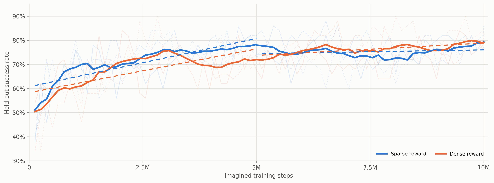
Real held-out success against imagined training steps for both dream arms, out to 10M
steps. Dashed lines are linear fits over the first and the second half of training. The
second-half fits are nearly flat for both reward modes.
Performance by latent type
LeWM's predictor works in a projected latent space, while the BC policy reads the raw
CLS token of the encoder. Both are 192-dimensional, so nothing crashes if you mix them up,
but they are not the same features. That leaves two options. Either keep the policy on raw
CLS and bridge back to it on every imagined step, which is what the dream loop above does, or
train the policy directly on projected latents so that what the predictor emits is already
what the policy reads.
We settled this at the BC stage, before any PPO run, by training the same action-chunked
policy on four different inputs and evaluating each one in the real environment
(BC policy performance in Results). Reading the LeWM dynamics latent
directly costs about 12 points of success against CLS features, before reinforcement learning
even starts. That is why we kept the policy on CLS features and added the inverse projector,
rather than taking the simpler design in which the policy reads what the predictor already
emits.
This part needs more analysis. It rests on a single comparison made at the BC stage over 3
seeds, with a seed spread wide enough that the ordering is not firm. It also does not tell us
whether that ordering survives PPO fine-tuning, or whether the dynamics latent is weaker in
itself or simply needs a different amount of training to be used well.
Out-of-distribution actions alter latent geometry and reduce state recoverability
Dream-PPO does not stay on the expert action distribution: exploration produces action
chunks that LeWM did not see as often during training. To isolate world-model failure from
probe failure, we generated a separate noisy-action dataset in the real PushT environment,
encoded those futures with LeWM, and trained probes on that distribution as well. This makes
the test stricter: if imagined rollouts lose accuracy, the explanation is less likely to be
"the probe has never seen these states" and more likely to be that the imagined latent itself
contains less recoverable task state.
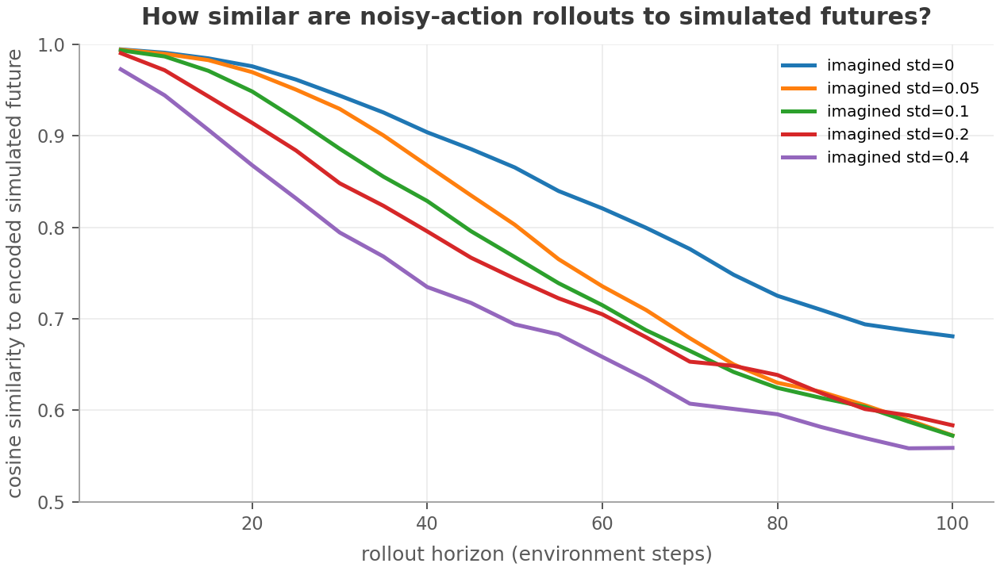
Noisy actions change the latent geometry: imagined latents move away from the encoded
futures produced by the real environment, and the gap grows with rollout depth and action
noise.
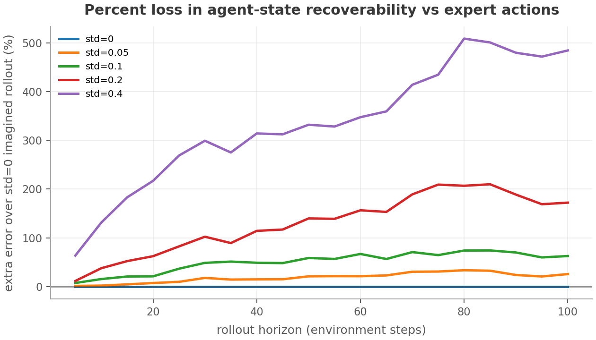
A geometry shift alone could still be harmless if it encoded the same state in a different
basis. The noisy-action probes test that alternative directly: task state becomes less
recoverable from imagined latents than from encoded real futures.
Interpretation
The key distinction is latent drift versus usable state information. The cosine plot shows
that OOD actions change the representation; the probe-error plot shows why that matters for
control, because agent and block state are harder to recover from the imagined latent itself.
Rollouts
FILL What is being shown and how it was produced — open-loop chunk
execution from held-out start states, imagined frames beside simulator frames.
Successes
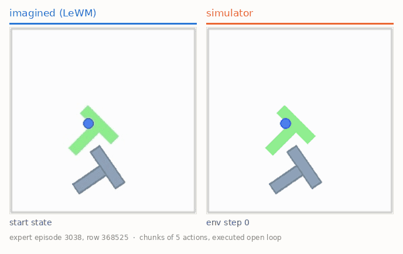
Success 1
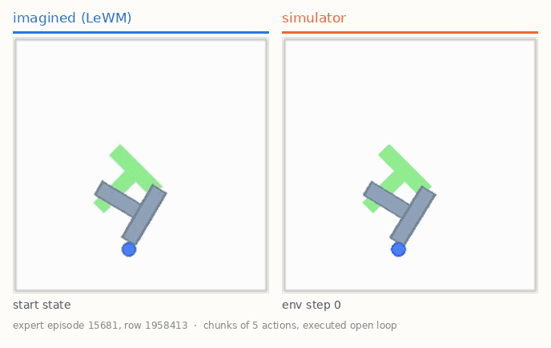
Success 2
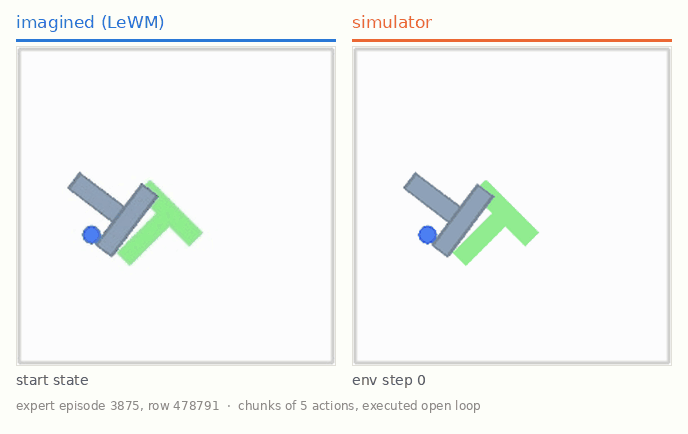
Success 3
Failures
FILL Ideally: a hallucinated success — the probe declares the
episode solved while the replayed chunks show it was not.
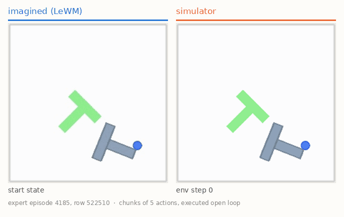
Failure 1
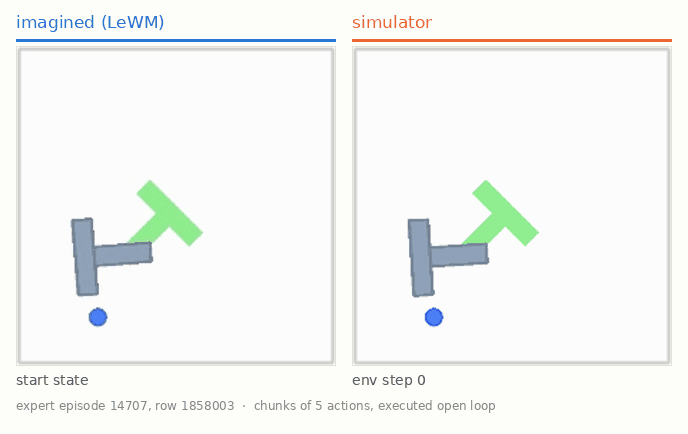
Failure 2
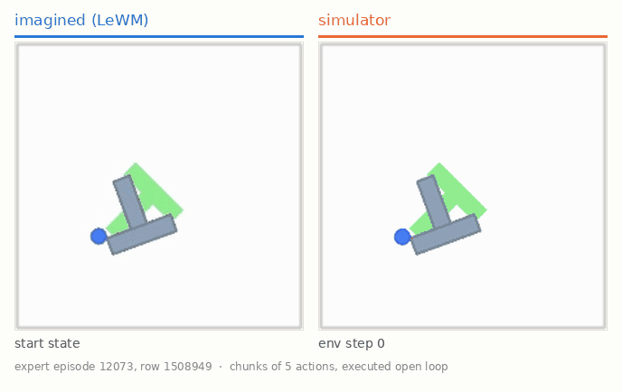
Failure 3
Visual Perturbations
As a smaller robustness check, we perturb the input image before encoding it with LeWM and
ask whether the latent still carries the same task state. We train perturbation-invariant
probes for this analysis, so the test is not just whether a clean probe transfers, but whether
state remains recoverable after the representation is explicitly exposed to these shifts.
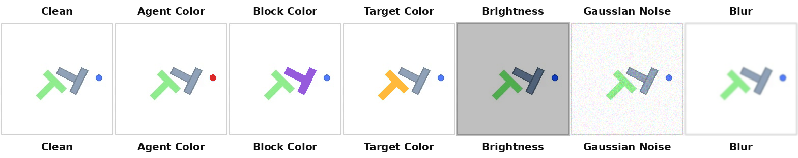
The perturbations change visual appearance while preserving the underlying PushT state.
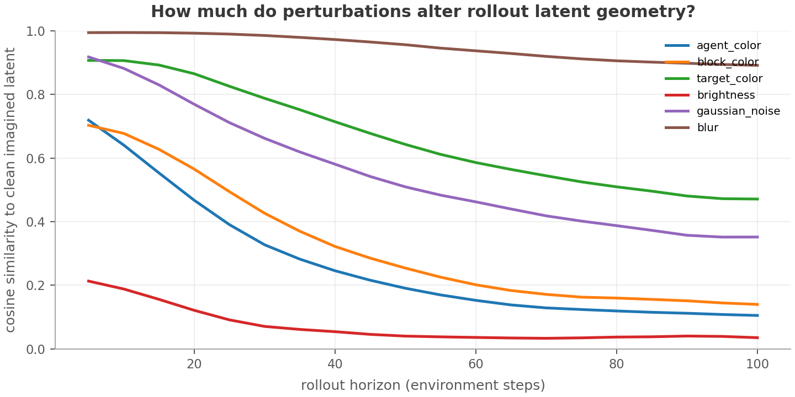
The perturbed images move the latent representation away from the clean encoding. As with
noisy actions, this geometry shift alone does not prove that the state information is gone.
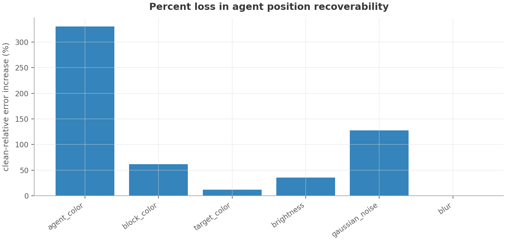
After a single LeWM step, agent-position recoverability degrades under visual
perturbations, even when evaluated with perturbation-invariant probes.
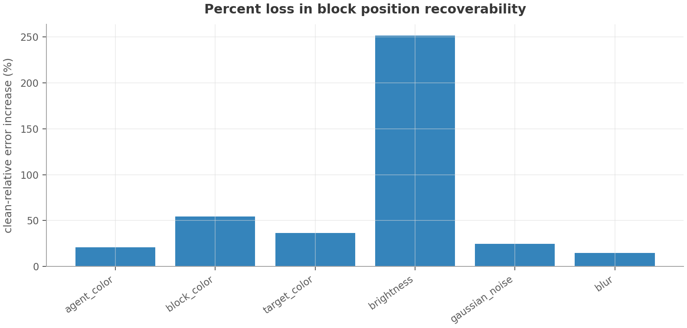
The same pattern appears for block position: task state becomes less recoverable after
one predicted transition.
Interpretation
A geometry shift alone could still be harmless if LeWM used a different but equally useful
representation that ordinary probes had not learned. The perturbation-invariant probes make
that explanation less plausible: even after training probes to handle the perturbations,
state recoverability drops. In this analysis, LeWM is not invariant to these visual shifts.
Acknowledgements
We thank our supervisor Akshay L Chandra for his guidance and support.
Built on LeWorldModel by Lucas Maes, Quentin Le Lidec, Damien
Scieur, Yann LeCun, and Randall Balestriero , and on stable-worldmodel for environment management
and evaluation. The PushT expert demonstrations come from Diffusion Policy.